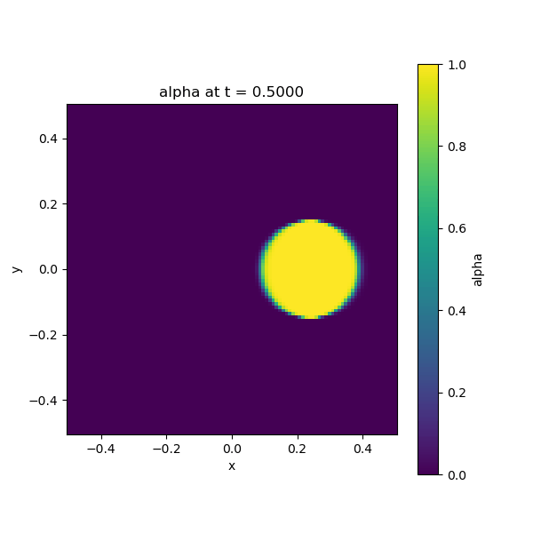

tanh_circle_5_rev_pm_sharpening
Description
2D advection test with Parameswaran-Mandal (PM) interface sharpening: a diffuse circle (radial tanh profile) advects in the x-direction through a periodic domain, completing 5 full revolutions. PM sharpening maintains the interface thickness. Output: 20-frame GIF.
How to run
python run.py unit_tests/tanh_circle_5_rev_pm_sharpening.yamlThe YAML lives in unit_tests/; each run copies it into the timestamped run folder (original remains for easy re-running).
Config summary
- Domain: x ∈ [-0.5, 0.5], y ∈ [-0.5, 0.5], 100×100 points
- Time: dt = 0.005, 2000 steps (T = 10.0 s, five revolutions)
- Velocity: (0.5, 0.0) — x-direction only
- Field: alpha, IC radial tanh (radius 0.15, thickness 0.02), periodic BC
- Solver: upwind (auto-selects upwind_2d); Timestepper: euler
- Sharpening: PM (eps_target = 0.02, strength = 0.1)
- Monitors: console (every 200 steps), gif (every 100 steps → 20 frames)
Output
Animated GIF (20 frames) showing the circle advecting with PM sharpening maintaining the interface:
